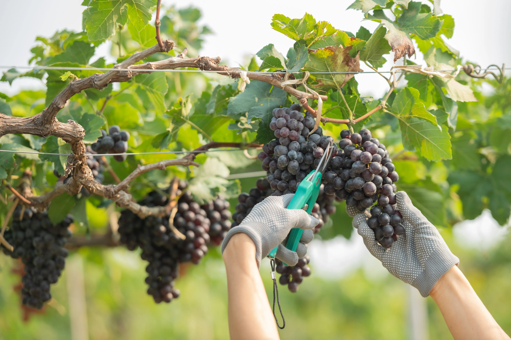

Raccolta dell'uva:
Il vino è come una poesia in bottiglia, ogni sorso è una nuova rima.
La raccolta dell'uva rappresenta il primo passaggio fondamentale nella produzione del vino. Questa operazione può essere effettuata manualmente o con l'ausilio di macchinari, a seconda delle dimensioni del vigneto e delle preferenze del produttore.
